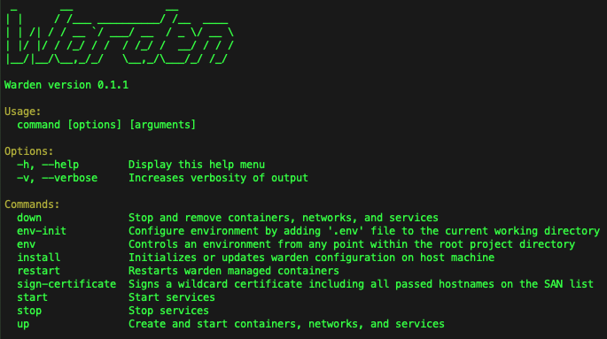

Install via Homebrew
$ brew install wardenenv/warden/warden $ warden svc up
Two-command install and setup process makes getting started lightning fast. Works on macOS and Linux.



Minimal Dependencies
Requires only Homebrew, Docker, and Docker Compose to get started, and Mutagen on macOS (for Magento 2 file sync).
Feature List
- Traefik for SSL termination and routing/proxying requests into the correct containers.
- Portainer for quick visibility into what's running inside the local Docker host.
- Dnsmasq to serve DNS responses for
.testdomains eliminating manual editing of/etc/hosts - An SSH tunnel for connecting from Sequel Pro or TablePlus into any one of multiple running database containers.
- Warden issued wildcard SSL certificates for running https on all local development domains.
- Full support for Magento 1, Magento 2, Laravel, and custom project environment configurations on macOS and Linux.
Sponsors

Support Warden Development on OpenCollective or Github Sponsors